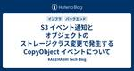

KAKEHASHI Tech Blog
https://kakehashi-dev.hatenablog.com/
カケハシのEngineer Teamによるブログです。
フィード

社会人歴15年を超えて、日報を書くことの重要性を再認識した件 1
1
KAKEHASHI Tech Blog
こちらの記事はカケハシ Advent Calendar 2024の8日目の記事になります。 こんにちは、株式会社カケハシのデータサイエンティストの保坂です。 最近色々なことが重なって日報を書き始めたのですが、やったことがほかの人に見える様になるだけではなく自分自身の日々の活動を振り返ることにもとても有用だと実感したので、なぜそう感じたのかを紹介させていただきたいと思います。 日報を始めた動機 お恥ずかしい話ですが、私はもうここ10年近く、日記や日報など、日々の活動を記録したり共有したりすることをやっていませんでした。 社会人になってしばらくの間は、好きなエディタを使ってとりとめもなく考えたこと…
15時間前

薬局業務向けの音声認識エンジンの評価・選定基準
KAKEHASHI Tech Blog
こちらの記事は Advent Calendar 2024 の 7日目の記事になります。 adventar.org 生成AI研究開発チームのainoyaです。 カケハシでは生成AIを使った更なる薬局業務DXに挑戦しています カケハシでは、生成AIを活用した薬局業務効率化の機能として、薬剤師の音声メモもしくは薬剤師との患者の音声データを文字起こしし、生成AIを使用して薬歴を自動生成するソリューションを現在開発しています。この機能が本当に業務の効率化をもたらすことができるかどうかは、医療用語を含む会話音声が正しく文字起こしできるかがとても重要なポイントです。今回の記事では、 Amazon Trans…
2日前

【Node.js】S3からS3へのアップロードをnode:stream/promisesのpipelineやaws-sdk/lib-storageでやる
KAKEHASHI Tech Blog
はじめに こちらの記事は Advent Calendar 2024 の 6日目の記事になります。 カケハシでソフトウェアエンジニアをしている加藤です。 この記事では、S3からS3へのファイルのアップロードをNode.js, TypeScript, Stream APIを利用して行う方法について説明します。 背景 S3にあるファイルを取得して後続処理で利用しやすい形にフォーマットを変換して別のS3へ保存したいということはよくあることかと思います。 例えば、CSVファイルを取得してJSONに変換してS3に保存するといった処理です。 まず思いつくのは S3からファイルをダウンロード ローカルに保存し…
3日前

新規事業Analyticsチームにおける2024年の品質担保・業務最適化に向けた取り組み 1
KAKEHASHI Tech Blog
こちらの記事は カケハシ Advent Calendar 2024 の5日目の記事になります。 adventar.org 1.はじめに 2.Patient Engagement事業とは 3.Analyticsチームについて 4.当時の課題 ①KPIの設定が最適化されていなかった ②様々な施策や試みの運用が属人化していることがあった 5.そこで、我々が実施したこと ①KPIの深堀・検討 ②適切なKPIをどういうロジックで算出するかを決める ③プロジェクト運用のガイドライン作成 ④プロジェクト振り返りの開始 6.おわりに 1.はじめに はじめまして。カケハシの新田です。 カケハシでの新たなプロジェ…
4日前
「データの力で医療体験を変えていく」カケハシのデータ基盤を支えるエンジニアたちの志
KAKEHASHI Tech Blog
カケハシには、あらゆるプロダクトのデータ活用を一手に担う、データ基盤のスペシャリストチームが存在します。今回は、チームの中核となる3人のエンジニアに、「入社の決め手」「入社後の衝撃」「今後の展望」そして「求めるエンジニア像」を語ってもらいました。 事業・領域によって、扱うことのできるデータはさまざま。特に「自分の仕事が社会の何に貢献しているのか」「その課題解決が誰の役に立っているのか」モヤモヤを抱えているエンジニアの方にお届けしたい記事なりました。ぜひご一読を！ きっかけは「データを活用して世の中の役に立ちたい」という想い データチーム / Engineering Manager / 松田健司…
6日前

S3 イベント通知とオブジェクトのストレージクラス変更で発生する CopyObject イベントについて
KAKEHASHI Tech Blog
処方箋データ基盤チームでエンジニアをしている岩佐 (孝浩) です。 カケハシには「岩佐」さんが複数名在籍しており、社内では「わささん」と呼ばれています。 私が所属する処方箋データ基盤チームは、日本全国の薬局から送信される処方箋データを S3 に保存しています。 今後ストレージコストの増加が予測されるため、S3 ライフサイクル・ルールを利用してストレージクラスを変更することにしました。 この S3 バケットには EventBridge 通知が設定されており、ふと、「ストレージクラスの変更でイベントが発生するのでは」と気になりました。 結論として、ストレージクラスを変更すると、CopyObject…
6日前
カケハシの生成AIプロダクトのプロダクトポリシーを公開します 2
KAKEHASHI Tech Blog
こちらの記事は カケハシ Advent Calendar 2024 の 2日目の記事になります。 adventar.org こんにちは。カケハシでプロダクトマネージャーをしている高梨です。 私は今生成AIを活用した薬局向けの医療アプリケーション開発に取り組んでおり、先日横浜で開催された第18回日本薬局学会学術総会（NPha） でもプロトタイプを初お披露目させていただきました。 カケハシで生成AIのプロダクトを開発するのはこの取り組みが初めてだったため、プロトタイプの開発にあたっては、事前にさまざまな本や資料で生成AIプロダクトの原理原則やプラクティスを調査したり、開発を進めながらプロダクトポリ…
7日前

PMF後にありがちな「何のためのプロダクト？問題」を解決したのは、North Star Metric だった
KAKEHASHI Tech Blog
こんにちは！ 「Musubi AI在庫管理」（AI在庫管理）プロダクトマネージャーをしている山田です。 突然ですが、機能追加や改修が続き、そのプロダクトが「誰に、どんな価値を提供するものなのか」、曖昧になっている状況にモヤモヤを感じたことはありませんか？ その課題、「North Star Metric」（NSM）という指標を定めることで解決できるかもしれません。今回は、私たちが一年近くの時間をかけて取り組んだNSMの取り組みを具体的なエピソードを踏まえてご紹介したいと思います。チームの規模が拡大し、メンバー間の目線合わせや一体感に課題を感じている方の参考になってくれると嬉しいです。 そもそもN…
10日前
TSKaigi Kansai 2024 登壇・協賛レポート
KAKEHASHI Tech Blog
カケハシで技術広報を担当している櫛井です。カケハシは2024年11月16日(土)に開催されたTSKaigi Kansai 2024にて、Goldスポンサーを務めました。また、カケハシのエンジニアがランチタイムのスポンサーLTで登壇いたしました。kansai.tskaigi.org こちらのエントリでは、当日の会場での様子やセッション資料を基に雰囲気をお伝えします。 会場は京都市勧業館みやこめっせ。平安神宮のすぐそばにある広々とした会場で、とても雰囲気の良い場所でした。 会場の様子 京都で400名規模の技術イベントはなかなか珍しいとのことで、沢山の参加者が来場されました。 カケハシが実施したスポ…
16日前
AWS Client VPN で API Gateway Private REST API にアクセスする方法
KAKEHASHI Tech Blog
処方箋データ基盤チームでエンジニアをしている岩佐 (孝浩) です。 カケハシには「岩佐」さんが複数名在籍しており、社内では「わささん」と呼ばれています。 先日、社外のオンプレミス環境から API Gateway Private REST API にアクセスしたいという要件を検証する機会がありましたので、備忘録も兼ねて紹介します。 この投稿では、どのような AWS リソースを作成しているのかを、ステップごとに確認しながら進めていきます。 まずは AWS CLI で構築を行い、最後に AWS CDK のコードを掲載します。 AWS 構成 クライアント認証 AWS リソース VPC Internet…
25日前
さまざまな業界で経験を積んだエンジニアたちは、なぜカケハシを選んだのか
KAKEHASHI Tech Blog
『Musubi』は薬剤師の業務効率化に加え、服薬指導のサポート、各種データの見える化、アプリによる服薬フォローや来局促進など、さまざまなアプローチで薬局のDXを推進している電子薬歴システムで、カケハシの主力サービスです。 今回はMusubi開発チームのメンバーが「なぜ医療、薬局・薬剤師という専門領域へ飛び込んだのか」「エンジニアがどのような点にやりがいを感じているのか」といった話題から、入社後の苦労まで赤裸々に語りました。ぜひ最後までご覧ください！ （文中に登場する久保田はリモートでの参加となりました） カケハシで活躍するエンジニアたちのバックグラウンドは？ Musubi開発チームのマネージャ…
1ヶ月前
zustand v5へのアップデートと reselectの導入
KAKEHASHI Tech Blog
こんにちは、カケハシのAI在庫管理チームでフロントエンドエンジニアをしている Nokogiri です。今回は、AI在庫で利用している zustand をv4系からv5系にアップデートした際に、reselect を導入した理由と、その経緯について説明します。 zustand導入の経緯 zustand導入の経緯や活用法に関しては以下の記事をご覧ください。 v5で何が変わったか？ 変更点はいくつかあります。 デフォルトのエクスポートの削除 非推奨の機能の削除 React 18 を最低限必要なバージョンにする React.useSyncExternalStore にピュアに依存するようになる などなど…
1ヶ月前
Google Docsでイベント配布用冊子の組版データを作成する技術
KAKEHASHI Tech Blog
技術広報の941です。この記事では、イベントで配布するための冊子を印刷するためのデータ(組版といいます)を、Google Docsで作成する際に気をつけるべきポイントについて共有したいと思います。
2ヶ月前
医療における生成AIアプリケーションの精度評価
KAKEHASHI Tech Blog
こんにちは。カケハシでプロダクトマネージャーをしている高梨です。私は今生成AIを活用した薬局向けの医療アプリケーション開発に取り組んでおり、今回は生成AI医療アプリケーションのPRDをまとめる上でも特に特徴的だった精度要件（品質評価要件）に関して書こうと思います 。
2ヶ月前
AWSの設定値保存：最適な方法を選ぶためのガイド
KAKEHASHI Tech Blog
Musubi AI 在庫管理で DevOps エンジニアをしている kacky です。Web アプリケーションの開発において、設定値の管理は避けて通れない課題です。データベース接続情報や 機能フラグなど、アプリケーションの挙動を左右する重要な情報を安全かつ効率的に扱う必要があります。AWS では、設定値の保存に利用できるサービスがいくつか存在します。本稿では、特に S3, AppConfig, Parameter Store の 3 つに焦点を当て、それぞれのメリット・デメリットを比較し、最適な設計を選択するための決定法を紹介します。
2ヶ月前
Gitのコミットログから開発属人性を定量化する方法と品質向上への活用事例
KAKEHASHI Tech Blog
AI在庫管理の開発チームのバックエンドエンジニアのもっち(@mottyzzz)です。今回は、AI在庫管理の開発において、Gitのコミットログから開発属人性を可視化して品質向上を実施していく箇所の優先順位をつけた事例を紹介します。
2ヶ月前
Flutter Widget Book で UIコンポーネントの管理
KAKEHASHI Tech Blog
はじめに Flutter開発において、UIコンポーネントの管理は常に大きな課題です。複数の画面サイズへの対応、ダークモードと通常モードの切り替え、多言語対応、コンポーネントの一貫性維持、そしてデザイナーとの効率的な協業など、様々な問題に直面します。これらの課題に対して、WebフロントエンドではStorybookが広く採用されていますが、Flutterエコシステムでは、Widgetbookが注目を集めています。 この記事は秋の技術特集 2024の 14 記事目です。 はじめに Widgetbookとは 導入方法 プロジェクト構成 パッケージの追加 lib/main.dartの修正 Widgetの…
2ヶ月前
rpy2を用いてPython上でRを使用した効果検証手法の簡単な実装
KAKEHASHI Tech Blog
カケハシでデータサイエンティストをしている島吉です。カケハシのデータサイエンティストは、AI在庫管理のエンジニアと連携したり、機械学習を使う業務が多いため、データ分析にはPythonを使用することが多いです。しかし、統計的な手法のライブラリはRに多く存在しています。たとえば、現在の業務では、効果検証に傾向スコアマッチングを使用しており、さまざまな書籍でRを用いた使用例を多く見かけます。そこで、PythonとRの両方を使用し、Rが適した部分はRで実装し、ほかの処理は使い慣れたPythonで実装しようと考えました。
3ヶ月前
目的別データベースの実践: PostgreSQL 行レベルセキュリティと DynamoDB Outboxパターン
KAKEHASHI Tech Blog
カケハシのプラットフォームチームのテックリードとして組織管理サービスと認証基盤を開発している kosui です。今回は、目的別データベースをプラットフォームチームではどのように実践しているかご紹介します。
3ヶ月前
処方箋データ基盤チームが提供する「しなやかなプラットフォーム」の紹介
KAKEHASHI Tech Blog
処方箋データ基盤チームでエンジニアをしている岩佐 (孝浩) です。2024年6月に入社し、薬局の処方箋データを扱うプラットフォームの構築に携わっています。カケハシには「岩佐」さんが複数名在籍しており、社内では「わささん」と呼ばれています。この投稿では、処方箋データ基盤チームが提供する「しなやかなプラットフォーム」について、技術トピックも交えて紹介します。
3ヶ月前
draw.ioをつかったフレキシブルな設計図作成術
KAKEHASHI Tech Blog
こんにちは！ソフトウェアエンジニアの種岡です。皆さん、システム設計に取り組んでいますか？ 設計は、プロジェクト成功への道筋を描く、航海の羅針盤です。目的地を見据え、それに向かって進むための確かな指針となります。設計の質がしっかりしていれば、開発という大海原でも迷わず進むことができます。 設計はプロジェクトの土台を築く、創造的かつ重要なプロセスです。夢を描き、それを形にする試行錯誤の楽しさ、これこそが設計の魅力だと思います。
3ヶ月前
プロダクト開発のモニタリングにおいて大事な4つの段階とベストプラクティス
KAKEHASHI Tech Blog
カケハシでMusubi Insightのバックエンドエンジニアをしている末松です。今回はプロダクトのモニタリングをどう進めていくべきかについて、4つの大事な段階とそのベストプラクティスを紹介したいと思います。
3ヶ月前
枯れた技術で当社比15倍の性能を達成したWindowsアプリを作った話
KAKEHASHI Tech Blog
カケハシのプラットフォームチームで開発ディレクターをしている髙橋です。 本職はアジャイルコーチやスクラムマスターなのですが、社内事情により2024年3月ごろから期間限定で実装をメインに活動しております。 今現在、UIと言えばスマートデバイスを含めたクロスプラットフォーム開発やWebアプリの開発が主流かと思いますが、今回は2002年にリリースされ未だ現役でありながらほとんど進化をしていないWindowsフォームでアプリケーションを作った時のお話をさせていただきます。 なぜ枯れた技術でアプリを作ったのか、その際どんなことに気を付けたのか、といった点について私見を述べさせていただきます。
3ヶ月前
医薬品検索でMySQLの全文検索機能を使った話
KAKEHASHI Tech Blog
AI在庫管理の開発チームでバックエンドエンジニアをしている沖です。今回は、AI在庫管理の医薬品検索において、MySQLの全文検索機能を使った話を紹介しようと思います。
3ヶ月前
Webフロントエンドの複雑な状態同士の依存をzustandを使ってリアーキテクチャする
KAKEHASHI Tech Blog
カケハシのAI在庫管理チームでフロントエンドエンジニアをしているNokogiriです。今回はAI在庫の入庫ダイアログをzustandを使ってリアーキテクチャした事例を元に取り入れたプラクティスを紹介したいと思います。
3ヶ月前
医療という社会課題を前に、AIエンジニアに何ができるか？
KAKEHASHI Tech Blog
カケハシが展開する薬局向けプロダクトのひとつ『Musubi AI在庫管理』。 データに基づく需要予測で薬局の医薬品在庫を最適化するというこのシステムの機械学習まわりをはじめ、新規事業にまつわるデータ活用や機械学習プロダクト開発を一手に担っているのが、私たちmirAI（ミライ）チームです。 カケハシでも、機能開発やプロダクト企画におけるAI活用の検討が、日を追うごとにどんどん進んでいます。ユーザーである薬局の皆さまからの期待の大きさも同様です。私たちとしても、医療領域におけるAI活用の実例や、その開発を担うmirAIチームの最新情報など、発信の機会を増やしてAIの社会実装に少しでも貢献できればと…
3ヶ月前
プロダクト目線とエンジニア目線でストーリーを紡ぐ「全体マップ」の作り方
KAKEHASHI Tech Blog
カケハシでエンジニアリングマネージャーを担当しているいくおです。今回は、私たちのチームで中規模以上（複数スプリントにまたがるもの）の機能開発を行うときに作成している「全体マップ」について紹介します。全体マップを考案したのはチームメンバーの椎葉さんなのですが、「いくおさん言語化うまいからブログにしてください！」とおだてられたので、それを真に受けて私がブログに書きます。
3ヶ月前
renovateとDependabotの連携による脆弱性管理
KAKEHASHI Tech Blog
カケハシではライブラリの更新検知にrenovateを利用しています。renovateは実行スケジュールの設定やパッチのグルーピングができるなどの機能が便利ですが、脆弱性データベースを持っていないため、検知された更新が脆弱性対応か否かがわかりません。最終的にはすべて対応するべきですが、対応の優先順位づけのためどれが脆弱性対応パッチなのかわかると便利です。
3ヶ月前
Slackリストを用いてSlackで管理を完結しましょう！
KAKEHASHI Tech Blog
AI 在庫管理のフロントエンドの開発を主に担当している鳥海です。今回は先日 Slack からリリースされた Slack リストをチーム内の開発プロセスに組み込んだので、活用事例についてご紹介していこうと思います。
3ヶ月前
新しいチームでTypeScriptに素早くキャッチアップするためにやったこと
KAKEHASHI Tech Blog
カケハシのプラットフォームチームでソフトウェアエンジニアをしているすてにゃん (id:stefafafan) です。今回は、私が TypeScript をメイン言語として採用しているチームに参加した際、言語や周辺技術のキャッチアップを行った方法について紹介します。
3ヶ月前